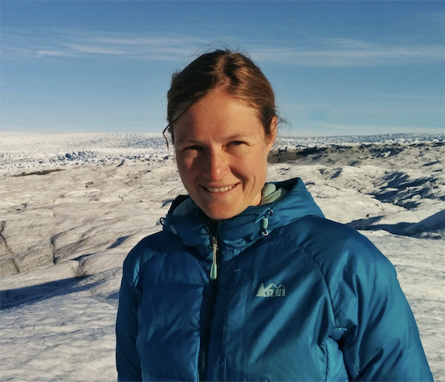

I am a polar scientist working primarily in the area of ice-ocean interactions. In 2018 I finished my PhD under the guidance of David Holland at the Courant Institute of Mathematical Sciences at New York University. After that I spent two years as a Marie-Curie Fellow at the British Antarctic Survey (BAS), followed by an additional year and half working as a physical oceanographer. In May 2022 I moved to New Mexico to join the Earth and Environmental Sciences and Theoretical Divisions at the Los Alamos National Laboratory. Since Fall 2022 I have been funded by a Director's Fellowship to integrate understanding from in-situ observations of ice-shelf melting, which I gathered and analyzed while at BAS, into the Energy Exascale Earth System Model developed by the Department of Energy.
